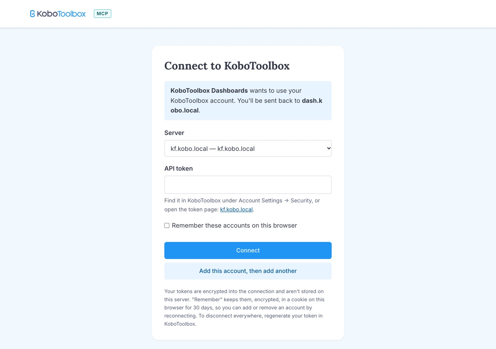
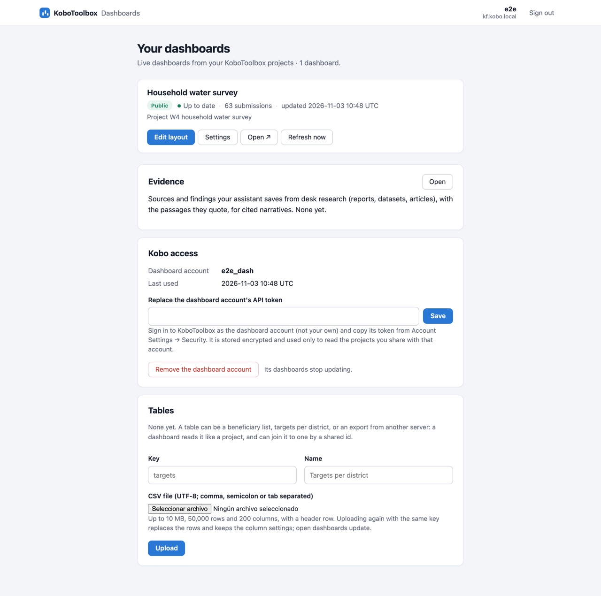

What it is
The kit runs KoboToolbox's dashboards service at dash.kobo.local, the same one KoboToolbox offers online, adapted to run with no internet. Dashboards are ordinary web pages: they open in any browser on a phone or laptop on the kit's Wi-Fi, and need no app or account to view.
- The assistant builds them. It reads the form and makes a first layout: totals, a chart for each question, filters for the obvious ones such as district or enumerator. Then it adds, removes and changes what you ask for: a headline number, a comparison across districts, a map, a filter.
- They update by themselves. The kit fetches new submissions on the schedule you choose (every 5 minutes to once a day), or at once when you ask. Open pages show the new numbers without being reloaded.
- Charts, tables, maps and stories. Bars, timelines, tables, headline numbers, maps shaded by area, and a "story" version that reads as one scrolling page.


Who does what
| Who | Uses | Does |
|---|---|---|
| Dashboard owners (managers, M&E staff) | The assistant, and dash.kobo.local with their own KoboToolbox account | Ask the assistant for dashboards of their projects; share them; set a password; change how often they update. |
| Viewers (the team, partners in the room) | Any browser on the kit's Wi-Fi | Open a shared dashboard's link, filter it, read its tables. No account. |
| Whoever looks after the kit | The status page | Check that dashboards are working; ask support to give a new owner dashboards. |
| Support | The kit's commands, over SSH | Give each owner their dashboard account (below); load maps for a new country. |
Setting it up
When the kit's bundle includes dashboards, the kit sets them up the first time it is switched on, with keys nobody else has, and the kit's home page links to them.
Give each owner a dashboard account
Dashboards never use the owner's own KoboToolbox account to read data. Each owner has a second account, named after theirs with _dash at the end (amina gets amina_dash), which only ever gets view access to the projects they make dashboards of. So the dashboards service can see those submissions and nothing else, and can't change anything.
Support makes it with one command per owner: dash.sh account amina. It creates amina_dash in KoboToolbox and connects it to Amina's dashboards. Nobody copies a password or token. When the assistant makes a dashboard, it shares the project with that account itself, view only.
Sign in
Owners open dash.kobo.local and sign in with their KoboToolbox API token (KoboToolbox: Account Settings → Security), on a page that offers only the kit's own KoboToolbox. Their page then lists their dashboards and shows the dashboard account.




Making a dashboard
Ask the assistant in plain words. Some of the requests it was set to handle on the test household water survey:
Make a live dashboard of the household water survey that I can share with the team later.
It describes what it will do (share the project with your dashboard account, view only; a first layout of 10 charts), asks you to confirm, then makes it. It starts private.Add a chart comparing the main source of drinking water across districts.
Let people viewing the dashboard pick a district, so every chart shows just that district.
Add a map of the districts, shaded by how many households were interviewed in each.
What does the dashboard show right now? Give me the main numbers.
Make a second, story-style version that walks a reader through where households get their water.
Every change the assistant makes is saved as a revision, so it can be undone. Owners can also move charts around themselves with Edit layout on their page. The assistant asks before anything that shares or changes a dashboard; check what it built before you share it, as it makes mistakes.
The assistant needs the recommended computer or a graphics card. Dashboard requests are long for a small model; they're among the tasks still to be measured on the recommended computer.
Maps
The kit carries the administrative areas (regions, districts) of the deployment's countries, from geoBoundaries (open data), so the assistant can shade a map by area with no internet. Matching a form's district choices to the map's areas is something the assistant works out, and may ask you about.
Under the areas and points, maps show the kit's own map of the deployment's countries (roads, towns, rivers, down to street level), from OpenStreetMap, prepared before the kit ships; the pilot kits carry Colombia and Venezuela. Without one, maps still show the areas, their shading and GPS points, on a plain background. Maps on the kit.
When something goes wrong
The status page has a Dashboards line:
| The status page says | What it means | What to do |
|---|---|---|
| Working. | All is well. | Nothing. |
| Starting up. | The kit was switched on in the last few minutes. | Wait. |
| Working, but dashboards are not updating with new submissions. | Dashboards open, but show the numbers from before. | Restart the kit. If it stays, call support. |
| Dashboards open, but their owners can't sign in, and the assistant can't reach KoboToolbox. | Shared dashboards still work; changing them doesn't. | Restart the kit. If it stays, call support. |
| Not working. | Dashboards don't open. | Restart the kit, then call support. Data collection is not affected. |
On the owner's page, each dashboard says whether its data is up to date. "Needs a dashboard account" means support hasn't run dash.sh account for that owner yet; "No access to the project" means the project isn't shared with the dashboard account (ask the assistant to share it, view only); "Kobo unavailable; retrying" clears by itself once KoboToolbox is back.
Dashboards, their settings and the dashboard accounts are in the kit's backups, and come back with a restore, also onto a replacement kit.
Who sees what
- The dashboards service reads only the projects shared with the owner's dashboard account, view only, and keeps a copy of their submissions to draw the charts. It never holds an owner's own KoboToolbox token. The dashboard accounts' tokens are stored encrypted with a key only this kit has.
- Viewers see what the dashboard shows, and nothing else of the project: not the raw submissions, unless a table on the dashboard shows them.
- The assistant works with the signed-in user's own KoboToolbox permissions, on the kit's KoboToolbox only.
- Nothing leaves the kit. The dashboards, maps and fonts are all on the kit; in the offline test no part of it tried to reach the internet.
What was tested
On the test kit with KoboToolbox, the whole path an owner and the assistant take, through the kit's own addresses, with the internet cut off: 28 of 28 checks.
- An owner signed in, with only the kit's KoboToolbox offered, and their dashboard account was in place.
- The assistant's tools added 12 submissions to a new project and made a dashboard of it, sharing the project with the dashboard account, view only.
- The dashboard stayed closed until it was made public. Then it filled with the 12 submissions and opened for a viewer with no account; its page loaded nothing from outside the kit.
- An open page heard about a 13th submission by itself, about a minute after a refresh.
- Lesotho's 10 regions came from the kit into the dashboard as a map layer, and the basemap tiles loaded from the kit.
- A packet capture during the run saw nothing addressed outside the kit.
- After a restart, everything came back by itself. A backup restored dashboards onto a kit with other keys.
Footprint: 1.3 GB of the kit's disk, and about 255 MB of memory when idle.
Limits
- Plain http. Like everything on the kit's Wi-Fi so far, dashboards and sign-in use http, not https: anyone on the Wi-Fi could in principle read the traffic. Keep the Wi-Fi passphrase to the team.
- A dashboard account per owner needs support, for now.
- Desk research (narratives that cite reports) needs the internet online; on the kit it will use the kit's own document library, which is still being built.
- Basemaps have to be prepared for each deployment's countries before the kit ships (how).
- The assistant on dashboards hasn't been measured on the recommended computer yet.